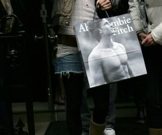
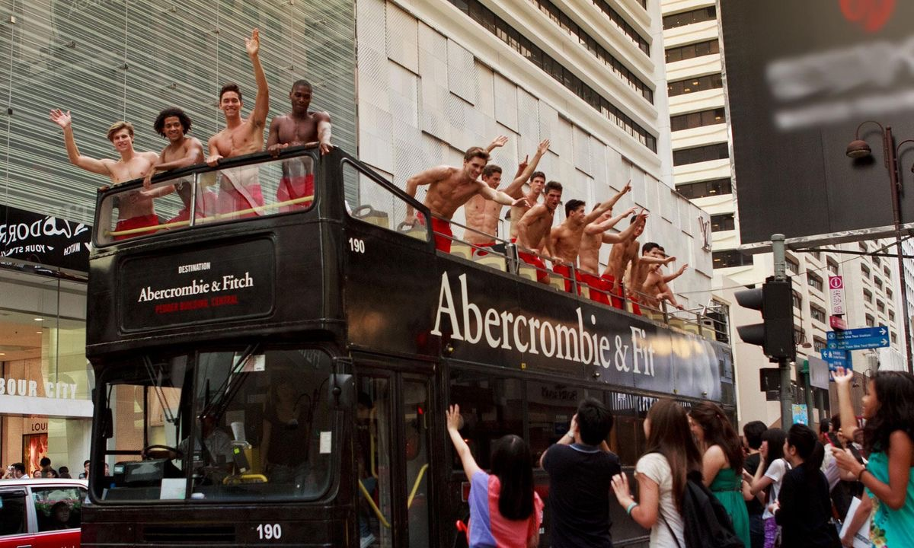
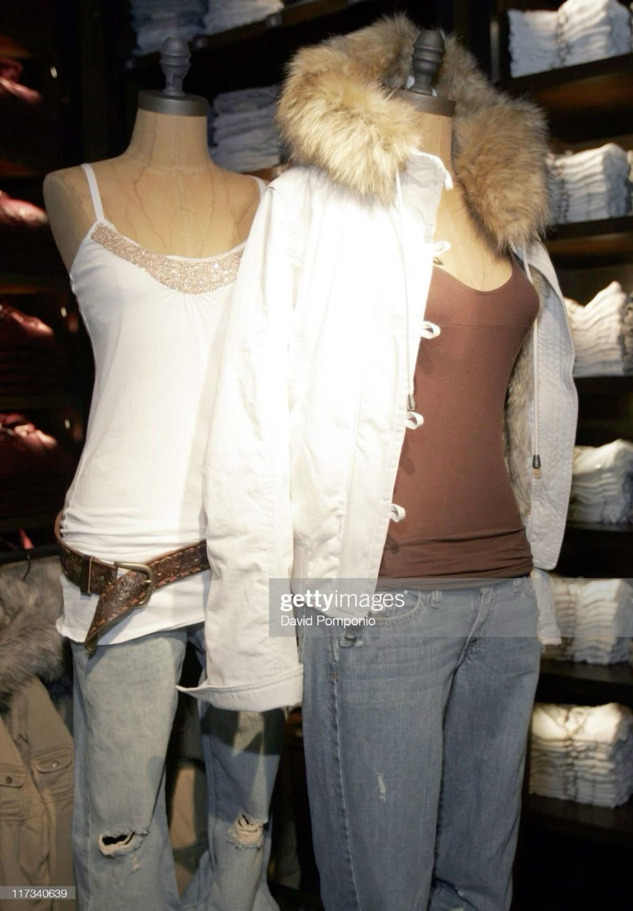

Si eres del 2007 como yo o años posteriores probablemente no sepas que es Abercrombie and Fitch, pero en los 2000s era la marca mas deseada por todos los jovenes.
En los comienzos, Abercrombie era una marca orientada a la caza, la pesca y diversas actividades en el exterior. Si conoces esta marca, probablemente estes preguntándote de que se supone que estoy hablando. No te preocupes, aunque esto sea cierto pronto perdió su esencia.
Abercrombie and Fitch era una marca con una estética muy marcada; buscaban la imagen de ese frat boy blanco, popular, que hacia deporte… vaya un Nate Archibald de gossip girl pero en la vida real; un estereotipo de hombre que existe si, pero mayormente en las películas. Su icónica bolsa, la que te daban cuando comprabas algo, era el torso desnudo de un hombre. Ya está nada mas.

// FIG. 01 — THE ICONIC SHOPPING BAGSeamos sinceros todo lo que queremos los jovenes es encajar, parecer cool… y eso es justamente lo que la marca te daba. La marca te proporcionaba ese estatus y estética para que hasta el mas nerd de tu uni pareciese popular. Promocionaban cuerpos desnudos perfectos, gente guapísima y todos con una característica clave: “white boys and girls”. Si Regina George hubiese existido en la realidad de esos 2000s, probablemente la regla no seria “los miércoles llevamos rosa” seria “los miércoles vamos de Abercrombie and Fitch”.

// FIG. 02 — STREET PARADE & FRAT BOY AESTHETICSEsto a dia de hoy seria imposible, la sociedad ha avanzado y los consumidores demandamos ciertos valores en las marcas. Y efectivamente acabó pasando, en 2003 la marca fue demandada por varios factores importantes:
- Falta de diversidad: Como mencionaba antes todos los modelos y trabajadores eran estadounidenses. Discriminaban deliberadamente a asiáticos, hispanos y gente de color.
- Discriminación religiosa: Si te discriminaban por tu procedencia también por tu religión, varias chicas dicen de haber sido rechazadas por utilizar hijab.
- Ocultar trabajadores en stockrooms: Y por ultimo por esconder a trabajadores en stockrooms para no ser vistos. Los trabajadores de sus tiendas eran igual, o mas atractivos que sus modelos pero cuando contrataban a alguien que no reunía sus estándares simplemente los escondían en zonas y puestos donde no pudiesen ser vistos.
— Mike Jeffries, CEO de Abercrombie & Fitch (2006)
De hecho, no fue hasta que Jeffries abandonó la empresa que no se empezaron a incluir tallas “grandes” en su catálogo, porque él se negaba rotundamente.
Sobre como acabó ese juicio hay diferencias según donde te informes, algunos dicen que pidieron disculpas y otros que no. Lo que si es certero es que tuvieron que pagar 50 millones de dólares en un acuerdo con los demandantes y diversificar su política de contratación.

// FIG. 03 — OLD CATALOGUEA dia de hoy si entras en sus redes sociales puedes ver personas de todas las tallas y todas las etnias. La marca tuvo un resurgimiento debido a un cambio de director, reinventándose en una marca mas sofisticada y clean para jóvenes. Se deberá esto a que de verdad se arrepintieron o simplemente fue una estrategia de supervivencia para evitar no caer en el olvido?
XX,S